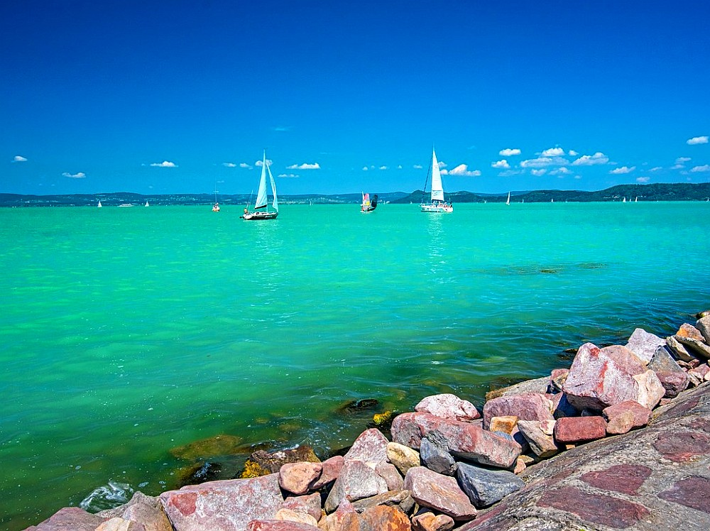
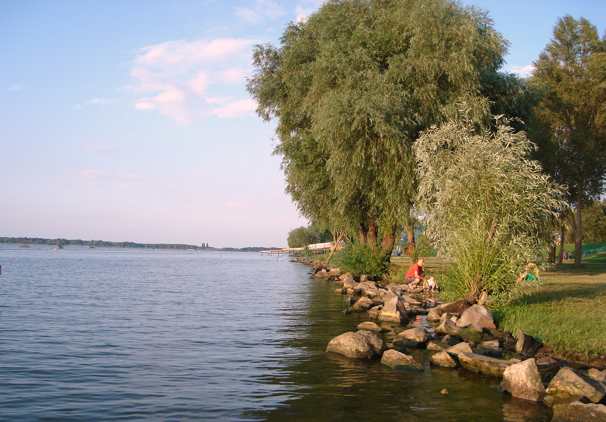
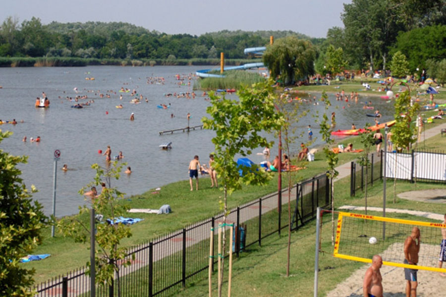

Könyvjelzők:
Kérem töltse ki a jelentkezési űrlapot:

A Balaton Közép-Európa legnagyobb tava,
amely Magyarország egyik legfontosabb turisztikai látványossága.
Hosszúsága körülbelül 77 km, szélessége helyenként eléri a 14 km-t, így nagy kiterjedésű vízfelületet nyújt a látogatóknak.
A "magyar tengernek" is nevezett tó vize sekély, ami különösen népszerűvé teszi a családok körében, mivel gyorsan felmelegszik.
A tó partján számos üdülőváros található, köztük Siófok, Balatonfüred és Keszthely, amelyek különféle programokkal és szórakozási lehetőségekkel várják a turistákat.
A Balaton-felvidék lankás hegyei borvidékeiről is híresek, így a borrajongók is különleges élményekkel gazdagodhatnak. Télen a tó gyakran befagy, így a korcsolyázás szerelmesei is kiélhetik szenvedélyüket.
A tó körül futó kerékpárút lehetővé teszi, hogy a sportkedvelők teljes hosszában körbejárják. A Balaton a természet, a sport és a kikapcsolódás kedvelőinek egyaránt ideális úti cél.
Hosszúsága körülbelül 77 km, szélessége helyenként eléri a 14 km-t, így nagy kiterjedésű vízfelületet nyújt a látogatóknak.
A "magyar tengernek" is nevezett tó vize sekély, ami különösen népszerűvé teszi a családok körében, mivel gyorsan felmelegszik.
A tó partján számos üdülőváros található, köztük Siófok, Balatonfüred és Keszthely, amelyek különféle programokkal és szórakozási lehetőségekkel várják a turistákat.
A Balaton-felvidék lankás hegyei borvidékeiről is híresek, így a borrajongók is különleges élményekkel gazdagodhatnak. Télen a tó gyakran befagy, így a korcsolyázás szerelmesei is kiélhetik szenvedélyüket.
A tó körül futó kerékpárút lehetővé teszi, hogy a sportkedvelők teljes hosszában körbejárják. A Balaton a természet, a sport és a kikapcsolódás kedvelőinek egyaránt ideális úti cél.

A Tisza-tó Magyarország második legnagyobb tava, mesterségesen létrehozott víztározó a Tisza folyó mentén.
Eredetileg árvízvédelmi célokból alakították ki, de mára az ország egyik legnépszerűbb turisztikai célpontjává vált.
A tó különlegessége, hogy szigetekkel és sekélyebb, gazdag élővilágú területekkel tagolt,
ami izgalmas élményt kínál a természetkedvelőknek.
A Tisza-tavi Ökocentrum Poroszlón kiemelt látványosság, ahol a látogatók megismerhetik a tó gazdag növény- és állatvilágát. A környéken kiépített kerékpárút lehetőséget ad a tó körbebiciklizésére, amit sok turista szívesen kihasznál. A Tisza-tó nyaranta népszerű a vízi sportok szerelmesei között; kajak, kenu, és csónakázás mellett horgászatra is ideális.
Télen a tó sekélyebb részei befagyhatnak, így ilyenkor a korcsolyázás is lehetséges. A Tisza-tó változatos kikapcsolódási lehetőségei és természeti kincsei miatt egyre kedveltebb célpont a hazai és külföldi látogatók körében is.
A Tisza-tavi Ökocentrum Poroszlón kiemelt látványosság, ahol a látogatók megismerhetik a tó gazdag növény- és állatvilágát. A környéken kiépített kerékpárút lehetőséget ad a tó körbebiciklizésére, amit sok turista szívesen kihasznál. A Tisza-tó nyaranta népszerű a vízi sportok szerelmesei között; kajak, kenu, és csónakázás mellett horgászatra is ideális.
Télen a tó sekélyebb részei befagyhatnak, így ilyenkor a korcsolyázás is lehetséges. A Tisza-tó változatos kikapcsolódási lehetőségei és természeti kincsei miatt egyre kedveltebb célpont a hazai és külföldi látogatók körében is.

A Szelidi-tó a Duna mentén, Bács-Kiskun megyében található, és Magyarország egyik legmelegebb vizű tava.
Természetes úton keletkezett, és bár kisebb a Balatonnál és a Tisza-tónál, népszerű fürdőhely a környéken élők és az idelátogatók körében.
Vizét a napsütés gyorsan felmelegíti, így nyáron különösen kellemes fürdési lehetőséget nyújt.
A tó környékén homokos partok és zöld területek várják a pihenni vágyókat, családias hangulatot biztosítva. A sekély, sós vizű tó gazdag ásványi anyag tartalma miatt kedvező hatású lehet a bőrre. A környéken számos panzió, kemping és étterem található, ami a látogatók kényelmét szolgálja.
A horgászat szerelmesei is szívesen keresik fel, mivel a tó gazdag halállománnyal büszkélkedhet. A Szelidi-tó ideális helyszín a csendes, természetközeli kikapcsolódást kedvelők számára.
A tó környékén homokos partok és zöld területek várják a pihenni vágyókat, családias hangulatot biztosítva. A sekély, sós vizű tó gazdag ásványi anyag tartalma miatt kedvező hatású lehet a bőrre. A környéken számos panzió, kemping és étterem található, ami a látogatók kényelmét szolgálja.
A horgászat szerelmesei is szívesen keresik fel, mivel a tó gazdag halállománnyal büszkélkedhet. A Szelidi-tó ideális helyszín a csendes, természetközeli kikapcsolódást kedvelők számára.